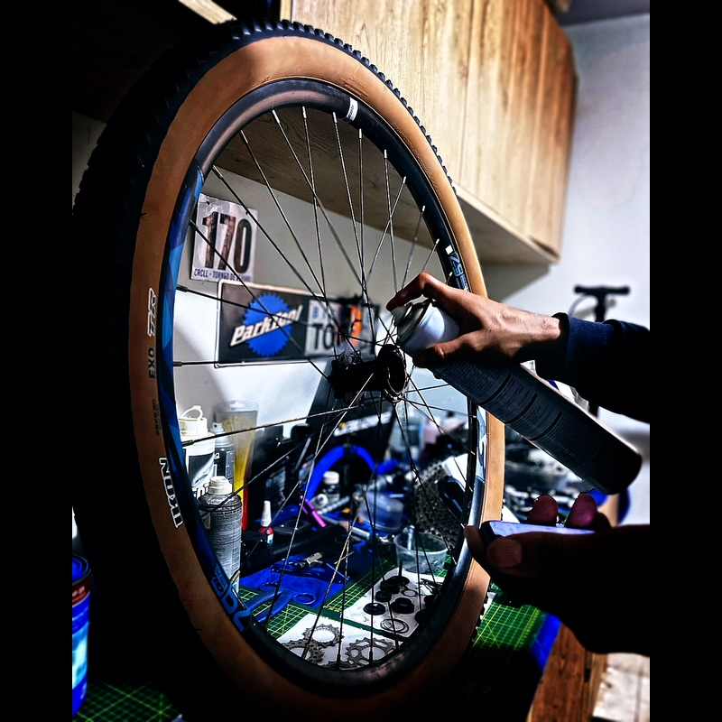
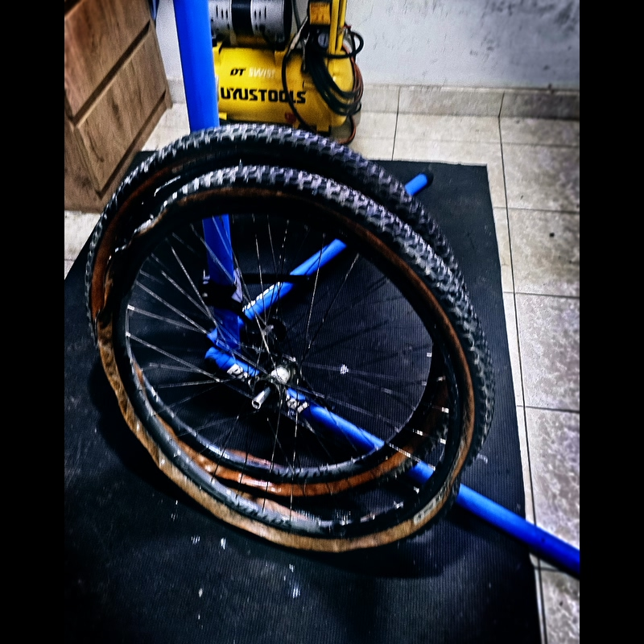
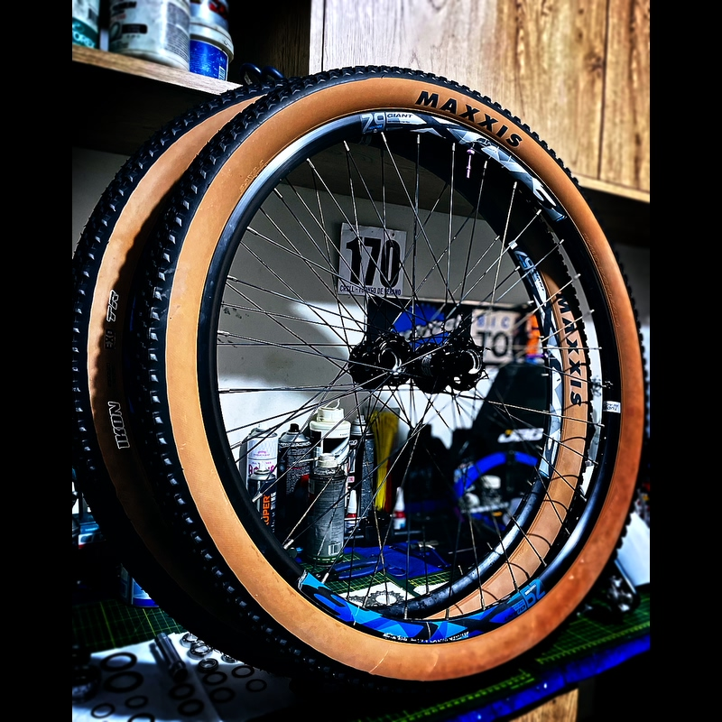

The question lands in the workshop almost every week. Sometimes it’s the road rider who wants to move from 25mm to 28mm but is afraid of “losing speed.” Sometimes it’s the person who bought a new bike with 28mm tires and is convinced they should swap them for 25mm “to go faster.” And sometimes — in complete honesty — it’s someone who just spent a serious amount on ultra-thin tires because “in road cycling, thin tires are faster.”
The belief is almost universal. And on real Peruvian asphalt, it’s practically always wrong.
This isn’t an opinion. Laboratory data from the last eight years proves it clearly enough that there isn’t much room for debate. What does require explanation is why physics says the opposite of what intuition suggests — and what the exact conditions are in which the thin tire actually wins.
That’s what I analyze here.
Before talking physics, local context matters. Because the tire-width debate in Peru isn’t the same debate as in Europe or the U.S. — the market is different, the surfaces are different, and the brands available are different.
The Cheng Shin Rubber group — which manufactures Maxxis and CST — controls an estimated more than 40% of the total replacement market in Peru. That’s not a minor detail: it means most tires rolling on Peruvian bicycles, from Lima to the provinces, come out of the same Taiwanese corporation.
Maxxis dominates the sport and MTB segment, being the most searched model on MercadoLibre Peru. CST and Kenda lead massive volume and the provinces, equipping most urban and transport bicycles. Continental GP5000 is the high-performance road reference in Lima — niche, but present. Schwalbe exists in the premium gravel/MTB segment, but its price makes it inaccessible to most of the market.
Chilean e-commerce is significantly more mature. Schwalbe and Continental have real presence in the mass market, not only in the premium segment. MTB leads total volume.
The national tradition in road cycling means Vittoria has a real presence that doesn’t exist in other Latin American countries. High volume in local shops.
Import restrictions affect international brand stock. Imperial Cord, a local manufacturer, has meaningful share that doesn’t exist elsewhere. MercadoLibre is the dominant channel.
Why does this matter? Because the question “which tire is best?” can’t be answered without knowing what’s available, at what price, and for what kind of rolling. A rider in Trujillo pedaling coastal flat mixed asphalt has a different tribological problem than someone climbing into the highlands on gravel.
The Coefficient of Rolling Resistance (Crr) is the variable that defines how much energy a tire consumes per unit distance traveled. It can be converted directly into watts lost via the equation:
The physical mechanism behind Crr is material hysteresis: when the tire casing deforms as it enters contact with the surface, it absorbs energy. When it returns to shape, it doesn’t return all of that energy — part is dissipated as heat. That dissipated energy is rolling resistance.
This is where physics contradicts popular intuition: a wider tire, under the same load, deforms differently than a thin one. The deformation is wider but shorter. The thin tire has a long and narrow deformation that implies higher curvature and a larger deformation cycle per wheel revolution. More deformation cycles per kilometer = more hysteresis loss.
“Thin tires have less contact with the ground, so they roll faster and with less resistance.”
The total contact patch area between tire and ground depends almost exclusively on load and pressure — not width. If the load is 50 kg and pressure is 80 psi, the contact area is practically the same on a 25mm or 32mm tire. What changes is the shape: narrow and long vs. short and wide. The short-wide shape implies less casing deformation per revolution and therefore less hysteresis loss. [Jan Heine, Bicycle Quarterly / Josh Poertner, Silca]
Bicycle Rolling Resistance (BRR) is the independent reference lab for bicycle tires. Its standardized methodology measures watts lost to rolling resistance at 29 km/h, with a 42.5 kg load per tire, adjusting test pressure according to each tire’s measured real width — not an arbitrary fixed pressure.
The following data are real, published, citable measurements. They are not estimates or projections.
| Model (same compound) | Measured width | Test pressure | Watts (Crr) | Ranking |
|---|---|---|---|---|
| Continental GP5000 (clincher) | 25mm (specified) | 80 psi / 5.5 bar | 12.1 W (CRR: 0.00363) | Reference |
| Continental GP5000 S TR | 25mm | ~80 psi adjusted | 10.1 W | Tubeless improvement |
| Continental GP5000 S TR | 28mm | ~72 psi adjusted | 9.7 W | FASTER THAN 25mm |
| Continental GP5000 S TR | 30mm | ~67 psi adjusted | 10.0 W | Almost the same as 28mm |
| Continental GP5000 S TR | 32mm | ~60 psi adjusted | 12.8 W | Noticeable increase |
| Continental GP5000 TT TR | 28mm | ~72 psi adjusted | 8.3 W | Top 5 road worldwide |
| Vittoria Corsa Pro Speed TLR | 28mm | ~72 psi adjusted | 6.7 W | Fastest in the world (lab) |
The data point that destroys the myth is in the third row: the GP5000 S TR in 28mm measures 9.7 W — 0.4 watts less than the same model in 25mm. Same compound, same manufacturer, same technology. The only change is width. And the wider one is more efficient.
IMPORTANT_CONTEXT:
BRR adjusts test pressure according to each tire’s real width — it does not test all tires at the same pressure. This replicates what any cyclist should do: adjust pressure according to width. The result is a comparison “under equal real-use conditions,” not a comparison where 28mm would be inflated to the same pressure as 23mm. That methodological detail is fundamental for interpreting the data correctly.
BRR’s lab data are on a smooth surface. Real asphalt — the Panamericana Norte, the access roads into the highlands, any avenue in Trujillo — is not smooth.
In 2017, Josh Poertner (CEO of Silca, former Technical Director at Zipp) presented a concept that fundamentally changed how the industry thinks about tire pressure: impedance losses (suspension losses or impedance losses).
The mechanics are this: when a tire rolls over an asphalt irregularity — a crack, an aggregate chip, a micro-pothole — it has two options. Either it absorbs the irregularity by deforming (if pressure allows), or it transmits the impulse vertically into the rider, lifting the combined mass of the system. That vertical impulse is energy that does not return as propulsion. It is dissipated. Those are watts lost that don’t show up on any power meter because they happen at the tire–ground interface, before reaching the pedals.
Poertner quantified these losses on chip-seal (similar to the rough asphalt of secondary Peruvian roads): with excessive pressure, impedance losses can exceed 20–30 watts. That is not marginal — it’s more than what most cyclists lose to aerodynamics at speeds below 35 km/h.
| Scenario | Tire | Pressure | P_rr (lab) | P_impedance (real asphalt) | Estimated P_total |
|---|---|---|---|---|---|
| Perfect wood track | 23mm clincher | 110 psi | ~8 W | ~0 W | ~8 W |
| Rough asphalt (real road) | 23mm clincher | 110 psi | ~8 W | 15–25 W | 23–33 W |
| Rough asphalt (real road) | 28mm tubeless | 72 psi | ~9.7 W | 3–8 W | 12–18 W |
| Rough asphalt (real road) | 32mm tubeless | 60 psi | ~12.8 W | 1–4 W | 13–17 W |
The number that matters isn’t in the P_rr column. It’s in the P_total column. On real roads, the correctly-pressurized 28mm tubeless is between 5 and 15 watts more efficient than a 23mm inflated to high pressure. For a cyclist producing 200W, that difference represents between 2.5% and 7.5% of total power. It’s the difference between upgrades that pay for themselves in performance and upgrades that are pure marketing.
WORKSHOP_DATA:
The average Peruvian road cyclist who arrives here inflates 25mm tires to 110–120 psi because “that’s faster.” On the Panamericana Norte, which has micro-cracks, aggregate in the asphalt layer, and expansion joints at intervals, that tire is losing an additional 15–20 watts in pure impedance. When I adjust pressure to the correct range (85–90 psi for 25mm, 70 kg rider) the bike “feels different.” Some describe it as “smoother.” What’s really happening is that it’s wasting less energy bouncing and more moving forward.

Jan Heine from Bicycle Quarterly developed and popularized the concept of Tire Drop: the optimal vertical deflection of a tire under load. His research establishes 15% of the tire’s outer diameter as the optimal vertical deflection — the range where casing hysteresis is minimized without pressure being so low that lateral stiffness is lost and inefficient deformation increases.
Frank Berto translated that concept into a practical formula that Silca and other manufacturers have refined computationally:
What matters in this formula is not the exact numerical result — Silca’s digital tools calculate that better. What matters is understanding the variables: optimal pressure increases with load and decreases with width. A heavier cyclist needs more pressure. A wider tire needs less pressure to reach the same 15% Tire Drop.
| System weight (rider + bike) | Tire width | Rear tire pressure (estimated) | Front tire pressure (estimated) | Recommended surface |
|---|---|---|---|---|
| 65 kg | 25mm | 78–85 psi | 68–75 psi | Fine to moderate asphalt |
| 75 kg | 25mm | 88–95 psi | 76–82 psi | Fine to moderate asphalt |
| 75 kg | 28mm | 70–78 psi | 60–68 psi | Moderate to rough asphalt |
| 85 kg | 28mm | 80–88 psi | 69–76 psi | Moderate to rough asphalt |
| 75 kg | 32mm | 55–62 psi | 47–54 psi | Fine gravel / rough asphalt |
| 80 kg | 29×2.25" MTB | 22–26 psi (tubeless) | 18–22 psi (tubeless) | Dirt / gravel / trail |
THE_MOST_COMMON_ERROR_IN_PERU:
90% of Peruvian road cyclists who come to the workshop have their tires inflated 15–30 psi above optimal pressure. The logic is “more pressure = harder = faster.” It’s exactly the opposite on real asphalt with irregularities. More pressure than optimal = more bounce = more impedance losses = slower, less comfortable, and higher risk of impact punctures (snake bite on tubed tires). The maximum pressure printed on the tire’s sidewall is a structural safety limit — not a usage recommendation.
There is a specific condition where tire width can hurt performance, and it has nothing to do with rolling: aerodynamics.
Josh Poertner formulated the 105% rule during his time as Technical Director at Zipp Speed Weaponry, originating in wind tunnel tests performed between 2001 and 2002, consolidated with the launch of the Zipp 808 model in 2004. The rule states:
The external width of the wheel rim should be at least 105% of the tire’s measured mounted width. If the tire is wider than the rim, airflow separates as it leaves the tire, creates turbulence, and increases aerodynamic drag. If the rim is at least 5% wider than the tire, the flow reattaches to the rim in a laminar manner.
This has a direct consequence in today’s market: most modern road rims measure between 25mm and 30mm external width. On those rims, a 25mm real tire (which usually measures 26–27mm mounted) is at the threshold or below it. A 28mm real tire (which usually measures 29–30mm mounted) can fall into the turbulence zone if the rim is under 29mm external width.
| External rim width | Max mounted tire width (105% rule) | Optimal tire (no aero penalty) |
|---|---|---|
| 21mm (classic narrow rim) | 20mm real | 23mm already aero-penalizes |
| 25mm (modern mid rim) | 23.8mm real | 25mm at the limit / 28mm penalizes |
| 28mm (modern wide rim) | 26.7mm real | 28mm correct / 25mm can create inverse turbulence |
| 32mm (endurance / gravel road rim) | 30.5mm real | 28–30mm correct |
The aerodynamically correct conclusion is counterintuitive: on modern 25–30mm rims, running a 25mm tire can be aerodynamically slower than running a 28mm, because the rim is not wide enough for the mounted 25mm tire but may be wide enough for the mounted 28mm. The rim + tire system matters more than each component by itself.
Not everything is relative. There are specific conditions where a thinner tire does have an advantage. Being honest about when the myth applies and when it doesn’t is part of the analysis.
| Condition | Does thin win? | Why | Relevance for Peru |
|---|---|---|---|
| Wood track (velodrome) | YES, clearly | Perfect surface eliminates impedance loss. Only pure Crr and aerodynamics matter. | None (no active competition velodrome in the country) |
| Brand-new perfectly smooth asphalt | YES, slightly | Impedance loss is near zero. Crr and aero dominate. The difference is small. | Limited (few stretches of perfectly smooth new asphalt) |
| Time trial at >40 km/h (TT) | DEPENDS on the rim | At high speed, aerodynamics dominate. But only if the rim+tire system meets the 105% rule. | Low (few TT events at team level) |
| Typical Peruvian real road | NO | Impedance loss exceeds any Crr advantage. A correctly-pressurized 28mm wins. | High relevance — the usual condition |
| Rough asphalt / chip-seal | NO, under any condition | Massive impedance loss. A thin tire at high pressure can lose 15–25W extra. | Very high (Peruvian interurban roads) |
| Gravel / dirt / hardpack | NO | Not even questionable. Air volume absorbs impacts and reduces total losses. | Very high (access to Andean zones) |

Regardless of brand — because what’s available in Peru largely defines what’s accessible — the optimal combination is defined by use case. Here is the map of what works in local reality:
| Use profile | Optimal width | Guideline pressure (75 kg) | Tire type | Note |
|---|---|---|---|---|
| Coastal road (Lima–Trujillo, mixed asphalt) | 28mm | 70–78 psi rear / 62–70 psi front | Tubeless or quality clincher | Optimal Crr + impedance balance |
| Mountain road / highlands access | 28–32mm | 65–72 psi / 56–63 psi | Tubeless preferred | Irregular asphalt. More volume = less loss |
| Urban / commuting Trujillo | 32–38mm | 50–60 psi / 45–55 psi | Clincher with tube or tubeless | Streets with potholes. Volume protects the tire and the rims. |
| Gravel / Andean hardpack | 40–50mm | 28–38 psi / 24–32 psi | Tubeless mandatory | Without tubeless, punctures are inevitable |
| MTB XC / trail | 2.2"–2.4" | 22–26 psi / 18–22 psi | Tubeless mandatory | Maxxis Ikon/Rekon available in Peru |
| Road racing (criterium / time trial) | 25–28mm (depending on rim) | Calculate with 105% rule | Tubeless TLR or tubular | Here you must verify rim–tire compatibility |
NOTE_ON_BRANDS_IN_PERU:
Maxxis (available) has road tires that roll properly at these widths. CST has decent urban and trekking options. For performance road, Continental GP5000 reaches the Peruvian market, though at a significant price. Schwalbe arrives in the premium gravel/MTB segment. The width recommendation applies regardless of brand — what changes across brands is baseline Crr and durability, not the physics of width. A well-inflated 28mm Maxxis will beat an over-inflated 23mm Continental in the real world, no matter how much each costs.
Physics is one thing. What actually rolls on the compact dirt tracks around Trujillo is another. I’ve tested enough combinations to have my own opinion on what works here — and the lab data either supports it or contradicts it. Here is the honest inventory.
XC in Trujillo is not technically demanding. There are no roots, no mud, no rock sections that require extreme traction. What there is: compact dirt, some loose dust on top, and speed. That defines what tire makes sense here.
| Tire | Size | Specified weight | Real measured weight | BRR watts (25 psi) | Evaluation in Trujillo |
|---|---|---|---|---|---|
| Schwalbe Racing Ralph Super Ground Addix Speed |
29×2.25 | ~560–590 g | ~610–650 g (real sample) | 19.0 W | Rear reference. Fast, efficient rolling on compact dirt. |
| Schwalbe Racing Ray Super Ground Addix SpeedGrip |
29×2.25 | ~625 g | ~660–680 g (real sample) | 20.4 W | Natural front pair for Racing Ralph. SpeedGrip gives more side bite without sacrificing too much. |
| Maxxis Ikon 3C MaxxSpeed EXO TR |
29×2.20 | 640 g | ~659 g (measured) | ~22–24 W | Correct. More consistent in weight than Schwalbe. Rolls a bit slower but very reliable. |
| Maxxis Ardent Race 3C EXO TR |
29×2.20 29×2.35 |
720 g / 745 g | ~759 g / ~780 g (measured) | ~27–29 W | Bridge between XC and trail. More volume than Ikon, more lateral traction, but pays ~40% more resistance vs Racing Ralph. |
| Continental Race King Protection |
29×2.20 | ~575–600 g | ~620 g | 18.2 W | Fast and light. Great rear for dry XC. Sketchy in loose corners — you have to know it. |
| Continental Cross King Protection |
29×2.20 29×2.35 |
~640–680 g | ~680–720 g | ~22–24 W | More side bite than Race King. Good front for XC with more surface variability. |
| Specialized S-Works Fast Trak T5/T7 2BR |
29×2.20 29×2.35 |
570 g / ~610 g | 588 g / ~640 g | 28.0 W (2.2) / 30.5 W (2.35) | Best by weight in the group. 588 g measured is light. Pays 4–5 W more vs Racing Ralph but that wheel weight is felt. |
| Specialized S-Works Ground Control 2BR |
29×2.30 | 650 g | 686 g (measured) | 31.3 W | Penalizes. In Trujillo there is no terrain that justifies those 31 W and that weight. For technical trail, correct — for local dry XC, no. |
| Pirelli Scorpion XC variants |
29×2.20–2.40 | ~580–640 g | Variable | ~19–22 W (RC versions) | Good option where available. Performance close to Racing Ralph in Race versions. No critical differences vs Schwalbe in local conditions. |
| Chaoyang MTB (multiple lines) |
29×2.10–2.35 | ~650–800 g | Variable | ~28–35 W (estimated) | Mass-market option. Accessible in Peru. They work — but rolling data does not compete with Racing Ralph or Race King. |
With all the data on the table, the math exercise that matters is not choosing the fastest tire in the lab — it’s choosing the front/rear combination that optimizes the whole system for real conditions of use.
In XC Trujillo the terrain is dry compact dirt, without extreme technical sections, with speed as the primary variable. The objective function is: minimum total Crr + minimum rotating mass + enough traction to not lose time in direction changes.
| Combination | Front | Rear | Total pair weight | Estimated total P_rr | Available in Peru | Verdict |
|---|---|---|---|---|---|---|
| Setup A — World XC reference | Racing Ray 2.25 ~660 g |
Racing Ralph 2.25 ~620 g |
~1,280 g | ~39 W | Hard in provinces | Technical optimum. The global XC benchmark. |
| Setup B — My current preference | S-Works Fast Trak 2.35 ~640 g |
Continental Race King 2.20 ~620 g |
~1,260 g | ~46 W | Partially available Lima | Fast Trak up front gives bite and volume. Race King rear is the fastest in the group. Light and balanced system for Trujillo. |
| Setup C — All Continental | Cross King 2.35 ~700 g |
Race King 2.20 ~620 g |
~1,320 g | ~40–42 W | Partially available | Solid. Cross King gives real front traction, Race King does the job in the rear. Manageable weight. |
| Setup D — Maxxis available in Peru | Ikon 2.35 ~743 g |
Ikon 2.20 ~659 g |
~1,402 g | ~46–50 W | Available Lima and provinces | Real local-market option. Not the fastest, but the most accessible. It works. |
| Setup E — Avoid in XC Trujillo | Ground Control 2.35 ~686 g |
Ardent Race 2.35 ~780 g |
~1,466 g | ~58–62 W | Partially available | Too much weight, too much resistance for dry XC. For wet technical trail, correct. For Trujillo, no. |
On road asphalt, the difference between tubeless and tube is real but moderate — mainly in Crr and puncture risk. In MTB on dirt and rough roads, the difference is of another magnitude. It’s not a marginal performance question. It’s the difference between being able to lower pressure into functional ranges or not.
With tubes in MTB, dropping below 28–30 psi in the rear exposes you to pinch flats (snake bite) on any impact against rock or root. With tubeless, the functional range drops to 18–22 psi rear and 16–20 psi front. That pressure difference has a direct and measurable effect on traction, comfort, and impedance losses.
| Parameter | With tube | Tubeless | Practical difference in XC |
|---|---|---|---|
| Minimum functional pressure (rear) | 28–32 psi | 18–22 psi | 10 psi less = larger contact patch, better cornering traction |
| Added weight per tube | +100–130 g per wheel | +60–80 g sealant | ~50–80 g less at the wheel perimeter. You feel it in accelerations. |
| Slow punctures (small holes) | Puncture = stop | Sealant closes by itself in <30 sec | In a race or long ride, critical difference |
| Installation cost | Low | Higher (sealant + valves) | Upfront investment, but amortizes in saved tires |
| Impedance losses at equal pressure | Tube adds internal hysteresis | No tube = more efficient system | ~1–2 W per wheel in the lab. On dirt roads, more. |
WORKSHOP_DATA:
In Trujillo, tubeless is not common outside the most active segment. Most MTB bikes that enter the workshop have a standard butyl tube inflated to 35–40 psi “just in case.” That pressure, on local compact dirt, creates unnecessary impedance losses and reduces the traction footprint right where it’s most needed — in corners with loose dust over hardpack. Tubeless conversion on an MTB wheel costs in Peru between S/. 40–80 additional per wheel (sealant + valves). In terms of performance per sol invested, it’s probably the best cost-benefit modification available in the local market.
The perception that “lighter wheels are more noticeable” is not psychological. It has a concrete physical basis.
The rotational moment of inertia of a wheel increases with the square of the distance from the axis. Mass located at the tire perimeter — knobs, casing, sealant — is at maximum distance from the axis and therefore has the greatest possible rotational inertia effect. Accelerating that rotating mass requires additional energy proportional to I·α, where I is the moment of inertia and α is angular acceleration.
The difference between the S-Works Fast Trak (588 g measured) and the Ardent Race 2.35 (~780 g measured) is 192 grams per tire. On a wheel pair: 384 grams of extra rotating mass. In a criterium or an XC race with multiple accelerations per lap, that is not marginal. Physics confirms it and any rider who has made the change has felt it.
| Tire | Measured weight | Additional rotating kinetic energy vs Fast Trak (at 30 km/h) |
Equivalent extra watts in a 10-second sprint |
|---|---|---|---|
| S-Works Fast Trak 2.20 | 588 g | — (reference) | — (reference) |
| Continental Race King 2.20 | ~620 g | +0.15 J | ~+1.5 W equivalent |
| Maxxis Ikon 2.20 | ~659 g | +0.33 J | ~+3.3 W equivalent |
| Maxxis Ardent Race 2.35 | ~780 g | +0.90 J | ~+9 W equivalent |
| S-Works Ground Control 2.30 | 686 g | +0.46 J | ~+4.6 W equivalent |
The thin tire myth originates from a use condition that practically does not exist in real Peruvian cycling: a perfectly smooth surface. On a velodrome, 23mm at 120 psi is indeed faster. On the Panamericana Norte, on any access road to the highlands, on any avenue in Trujillo, it isn’t.
BRR’s lab data show that the GP5000 in 28mm is 0.4 watts more efficient than in 25mm under the same normalized use conditions. Silca’s impedance-loss data show that on real roads the difference can be 5 to 15 additional watts in favor of 28mm. The 105% rule shows that on modern rims, 28mm can also be aerodynamically superior to 25mm.
The number I find most revealing of all: the fastest tire in the world in the lab, the Vittoria Corsa Pro Speed TLR, measures 28mm. Not 23mm. Not 25mm. 28mm.
What works in real Peruvian conditions:
Coastal road mixed asphalt: 28mm tubeless or quality clincher, 70–78 psi rear for a 75 kg rider. The impedance-loss improvement versus 25mm at 100+ psi is real and measurable.
Correct pressure before correct width: The most frequent error is not using the wrong width — it’s using the wrong pressure. A 28mm inflated to 100 psi loses the volume advantages. A 25mm at 85 psi will be better than the same tire at 115 psi on any asphalt with irregularities.
The 105% rule as a buying filter: Before deciding tire width, measure the rim’s external width. The optimal mounted tire width should not exceed 95% of the rim’s external width. On 25mm external rims, the ideal tire is 25mm specified or less. On 28mm external rims, 28mm specified is optimal.
The cyclist who inflates 25mm tires to 120 psi because “harder is faster” is losing between 10 and 20 watts on typical Peruvian roads. With those watts, they could ride 1.5 to 3 km/h faster at the same power. And they don’t have to buy anything new to get them back — they only have to inflate differently.